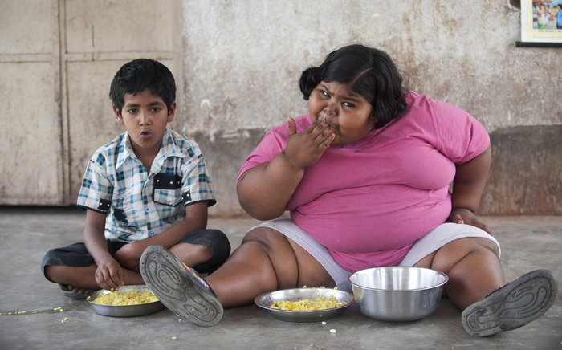

Переїдання - це тип наркоманії
У обивательській свідомості переїдання — це розбещеність і потурання своїм емоціям: багато хто впевнений, що повні люди переїдають тому, що вони просто слабка сила волі. Насправді ж, якщо придивитися, різні люди переїдають різні типи продуктів (тобто сила волі тут ні до чого).
Це з тим, якого нейрогормона не вистачає у крові людини і він, відповідно, намагається його заповнити. Фактично переїдання — це харчове самолікування, і навіть досить ефективне.
Проблема в тому, що переїдання діє за принципом наркоманії: наркотик при першому вживанні викликає приємні емоції, вивільняючи в кров нейрогормони (серотонін, дофамін, ендорфіни). Надалі депо, де запасалися нейрогормони, виснажуються, і така доза наркотику змушує викидати у кров менше ендорфінів. У результаті, через деякий час регулярного вживання, доза наркотику потрібна не для того, щоб викликати приємні відчуття, а для того, щоб підтримати нормальний стан. Інакше настає болісна «ломка». Ось те саме і з нейрогормонами, викид яких людина провокує їжею: спершу, поївши солодкого, він відчуває блаженне заспокоєння та безпеку, але такий стан тримається недовго. І досить швидко потрібна нова порція солодкого чи жирного. Починається з разового сильного ефекту, а потім їжа (або нікотин або кава) стає єдиним способом просто тримати себе в нормі. Тому переїдання і називають харчовою наркоманією.
Два види харчової наркоманії
То які харчові продукти викликають залежність?
Грубо кажучи, проблемних типів харчування описано два: коли людина відчуває нестачу нейрогормону серотоніну та нестачу нейрогормону дофаміну. Є ще нещасні, яким не вистачає одразу обох нейрогормонів; цим найважче. Якщо людині постійно доводиться переживати тривогу, вона втрачає серотонін. Якщо постійно мучать апатія та депресія — не вистачає дофаміну.

Дефіцит серотоніну: тривожність
Серотонін – гормон гарного настрою.
Достатній рівень серотоніну ви дізнаєтеся за відчуттям спокою, умиротворення, безпеки. Людина, в організмі якої достатньо серотоніну, дивиться на себе і світ позитивно і оптимістично, має високу самооцінку і він вірить у свої сили. Недолік серотоніну викликає тривожність, страх, безпорадність, песимізм, нерішучість та невпевненість у собі. Тих, хто страждає від нестачі серотоніну, можуть відвідувати нав'язливі думки (здебільшого про те, наскільки небезпечний цей світ), їх супутник — постійна тривога через стосунки з іншими людьми, сум. Вони турбуються через гроші, роботу, майбутнє, бояться самотності та непотрібності. Відчувають себе жалюгідними та залежними, недостатньо коханими. Мріють про турботу та надійну прихильність. Часто зазнають труднощів із засинанням — через тривожність. Можуть прокидатися вночі, погано спати (пов'язане із порушеннями фази швидких рухів очей під час сну). А ще з низьким рівнем серотоніну пов'язані мігрені, депресії, хронічна тривожність та невроз нав'язливих станів (ГКР), хронічні болі, втома та розлади травлення.
Ті, хто страждає від нестачі серотоніну часто приходять у відчай, песимістичні, сумні, потребують втіхи, але соромляться запитувати його в інших людей (і знаходять заспокоєння в поїданні солодощів і борошняного).
«Серотонінщиків», які страждають від нестачі цього нейрогормону, тягнуть солодощі, борошняне, високовуглеводні продукти, крохмалиста їжа, все тепле, м'яке, ніжної пастоподібної текстури. Улюблені ласощі – морозиво, суп-пюре, булочки, печиво, піца, молочний шоколад. (До речі, поради для тих, хто худне «просто замініть молочний шоколад на гіркий» — велика дурість і нерозуміння нейрогормональних механізмів переїдання. Молочний шоколад люблять ті, кому не вистачає серотоніну: він солодкий і м'який. Гіркий шоколад подобається «дофамінникам»: солодкий смак у ньому не відчувається, зате відсоток жиру високий, як у будь-якому шоколаді (тобто ці два види шоколаду не взаємозамінні, особливо з погляду різних типів переїдання).

Дефіцит дофаміну: апатія та депресія
Нейрогормон дофамін відповідає за негайний відгук на завдання, він позитивно підкріплює «правильні» дії. Наприклад, людина вирішила завдання — отримай нагороду негайний викид дофаміну. Ухилився від небезпеки — великий сплеск дофаміну. Знайшов щось цікаве чи корисне — викид дофаміну, але не надто великий. Дофамін активізує організм, підбадьорює, він виробляється як реакцію задоволення, збудження, новизну, інтерес.
Колись, у первісні часи дофамін допомагав формувати правильні ланцюжки дій: ось іде первісна людина лісом, знайшов їстівний гриб чи ягідний кущ — о, круто, сьогодні поїмо! Зустрів мамонта — слідує великий викид дофаміну («скажу нашим із племені, завалимо його, будемо всю зиму з м'ясом!»). Повернувся з мужиками, загнали мамонта — трапляється дуже сильний, хоч і короткочасний викид дофаміну: ми молодці! ми годувальники! Сьогодні, в 21 столітті, коли мамонтів усіх доїли, дофамін виробляється в інших ситуаціях, наприклад, так реагує мозок на лайки в соцмережах: о, хто мене лайкнув, треба подивитися, де я ще молодець, відчути міні-задоволення. (Соцмережі влаштовані так, щоб «паразитувати на дофаміні». Стрічка постійно оновлюється, і на кожну нову інформацію організм реагує виплеском дофаміну — маленьким, але регулярним).
Дофамін виділяється при хвилюванні, збудженні, напрузі сил (у книзі наводиться цікавий приклад, як один з пацієнтів, які страждають від нестачі дофаміну, знайшов втіху в спробі досягти недоступної жінки - і неважливо, що він її не отримав, його життя ставало цікавішим і яскравішим від спроб завоювати даму серця!)
При нормальному рівні дофаміну життя здається цікавим і яскравим, цікавим і хвилюючим. Недолік дофаміну веде до агресії, депресії, почуття розпачу, втоми, безнадійності, апатії, відсутності мотивації. Такі люди схильні шаленіти, іноді з незначних приводів, навіть для себе несподівано. Почуваються безсилими, нездатними виконати найпростіші завдання, не в змозі сконцентруватися. Агресія спрямовується і на себе: вони вдаються до самобичування за колишні помилки та нагадування про недоліки і слабкості.
«Дофамінники» воліють їжу гостру, жирну, солону, копченість, смажене, збуджуюче. Кофеїн, нікотин. Алкоголь сюди теж належить (пиво з чіпсами чи з солоними горішками – класичний спосіб підтримати себе). Підбадьорюють себе екстремальними видами спорту, азартними іграми, полюванням, нікотином, шопінгом, відеоіграми, спортивним «болінням» тощо.

Принципи переходу до здорового харчування
- Поступовість. Рухатись треба крок за кроком, не пропускаючи нічого і не намагаючись зробити відразу кілька ходів за раз.
- Продукти харчування: додавати, а не прибирати. Нічого не треба ЗБИРАТИ, спершу треба додавати. Звикати до смаку броколі, до салатів із сирих овочів, до йогуртів без добавок, до щоденних яблук та сиру.
- Поступово насичувати своє життя цікавими та приємними заняттями. дуже важливо спочатку додати в життя цікавих занять (спорт; зустрічі з друзями; цікаві заходи; хобі; ігри; нові враження; відвідування пам'ятних місць; прогулянки на природі; подорожі тощо).
- Змінювати психологічний настрій. Майк Дау пропонує переписати вашу мантру в позитивному ключі, зробити її підтримуючим посланням і регулярно говорити собі приємні речі, які дозволять почуватися краще.
- Психотерапевтичні методи. Майк Дау чесно описує психологічні прийоми, які використовує в роботі з пацієнтами, і в них легко впізнавані техніки КБТ (когнітивно-біхевіоральна терапія, вона ще може називатися КПТ, когнітивно-поведінкова терапія, в нашій країні термін ще не витримався).
- Добре треба до себе ставитися.